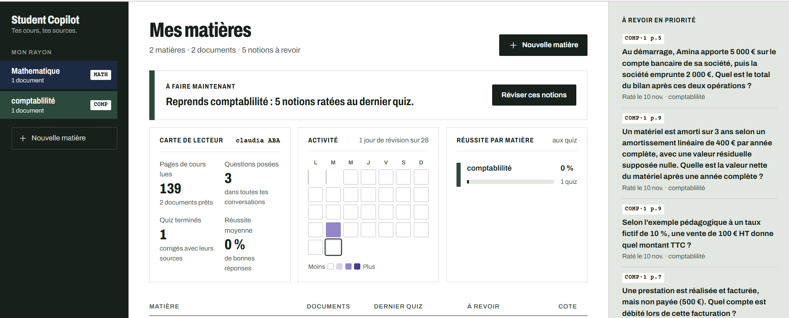
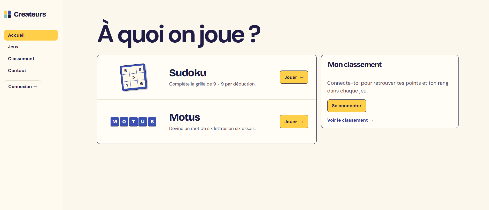
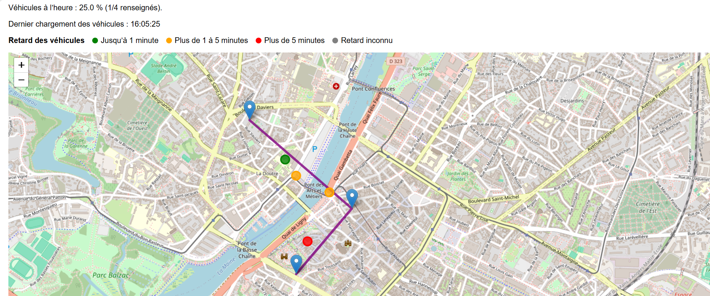

Étudiant en informatique et IA à l’ESEO Angers, je développe des applications web en Python.
J’apprends aussi à utiliser Python pour la data science et le machine learning, ainsi qu’à intégrer des modèles d’IA dans mes projets.

Description
Student Copilot est une application web conçue pour aider les étudiants à réviser
à partir de leurs propres cours.
Elle permet de ranger les documents PDF par matière et propose deux façons de travailler
à partir de ces supports : poser des questions sur le contenu des cours et s’entraîner avec des quiz.
Ma contribution
Dans ce projet d’équipe, j’ai travaillé sur l’architecture et le backend Django.
Je me suis notamment occupé de la gestion des matières, en développant la fonctionnalité
qui permet à chaque étudiant de créer ses propres matières pour organiser ses documents.
J’ai aussi corrigé des problèmes dans le fonctionnement des quiz et apporté plusieurs
ajustements à l’intégration de l’IA dans l’application.

Description
Ce site web rassemble des jeux de réflexion, dont des sudokus et des jeux de mots.
Les visiteurs peuvent choisir un jeu depuis la page d’accueil et y jouer directement
dans leur navigateur.
Ma contribution
J’ai participé à la plupart des étapes du projet, de la conception du site à sa publication.
J’ai contribué au développement des pages et des fonctionnalités de jeu,
puis j’ai repris le projet pour le remettre en ligne.
Pour le déploiement, j’ai configuré l’hébergement et la base de données,
transféré les fichiers sur le serveur et vérifié que le site s’affichait
correctement depuis son adresse publique.

Description
Ce projet de jumeau numérique représente le réseau de bus et de tramways d’Angers
sur une carte interactive.
La carte permet de consulter les arrêts et les itinéraires des lignes,
ainsi que de suivre les véhicules en temps réel.
Ma contribution
J’ai développé la carte interactive avec Leaflet et intégré les arrêts
ainsi que le tracé des itinéraires sur la carte.
J’ai aussi mis en place le suivi en temps réel des véhicules pour que leur position
s’actualise sur la carte au fil de leurs déplacements.
ESEO Angers
À l’ESEO Angers, je développe mes compétences en programmation et en développement web à travers des projets d’équipe.
En parallèle, j’approfondis l’utilisation de Python pour l’analyse de données et le machine learning.
Je cherche un stage ou une alternance en developpement IA